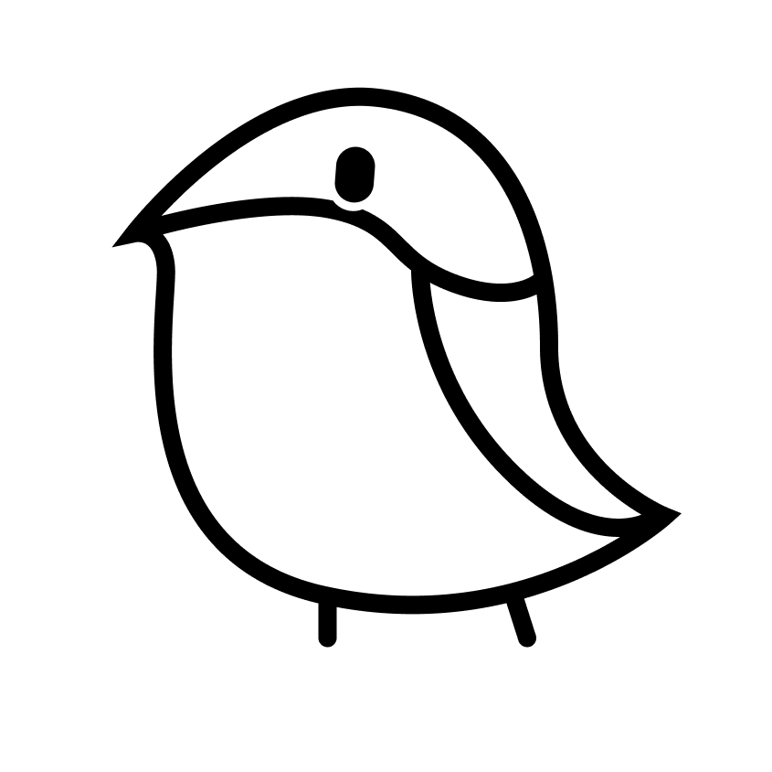

▶

Pan
Pan
Pan
Pan
For DESC9117 Sound Design for New Media
Sound Design for Wwise Cube

Magpie, you’re the star here. Use your magic and save the birds!
▶
For DESC9117 Sound Design for New Media
Synthesized Soundscape Design

Using synthesized sound to build the soundscape, mimicing a typical spring day in Australian parks with winds, bird songs and swooping magpies.
TRACK 01
Soundscape.mp3
For CMPN5006 Recording Portfolio
A Birdwatching Tour in Australia

TRACK 02
Birdwatching.mp3

Australia is home to many unique bird species. Driven by my passion for them, I created this podcast to share the pure joy of their songs. I captured bird songs in a park using field recording equipment and a Zoom recorder. These recordings were layered with my own narration to produce a podcast. All audio materials were recorded and produced by me.